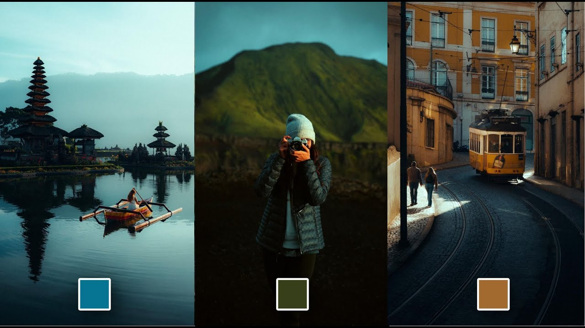
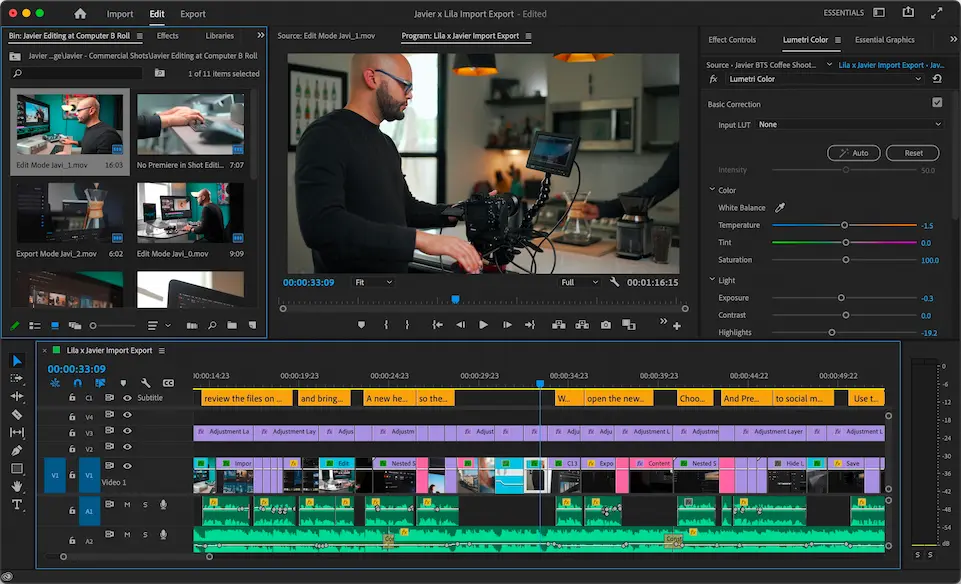
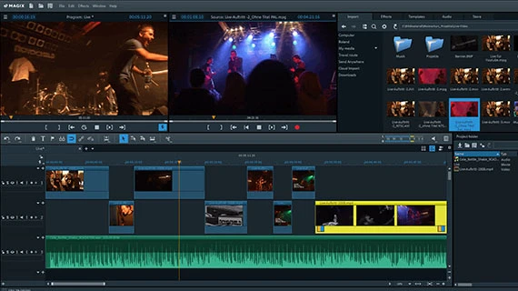

Poznaj techniki, które nadają filmom niepowtarzalny charakter
Editing wideo może przybierać różne formy, w zależności od stylu, celu i odbiorcy. Oto trzy najczęstsze rodzaje:

Styl kinowy, z dopracowaną narracją, efektami wizualnymi i precyzyjnym montażem scen. Idealny do filmów fabularnych i artystycznych.

Szybki i dynamiczny montaż materiałów z życia codziennego, podróży lub wyzwań online. Dużo cięć, muzyka, napisy.

Synchronizacja obrazu z muzyką, efekty wizualne i przejścia. Idealny dla teledysków i contentu muzycznego.